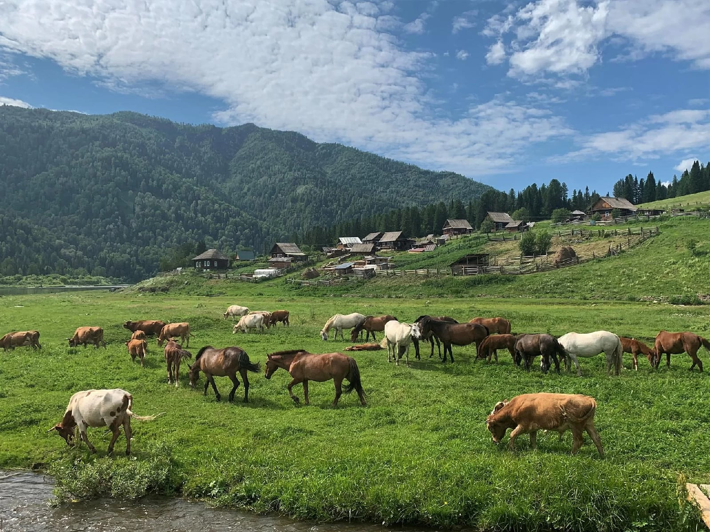
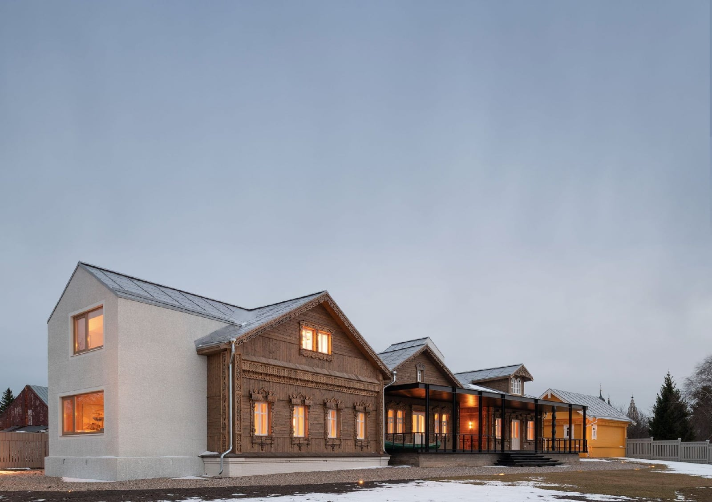
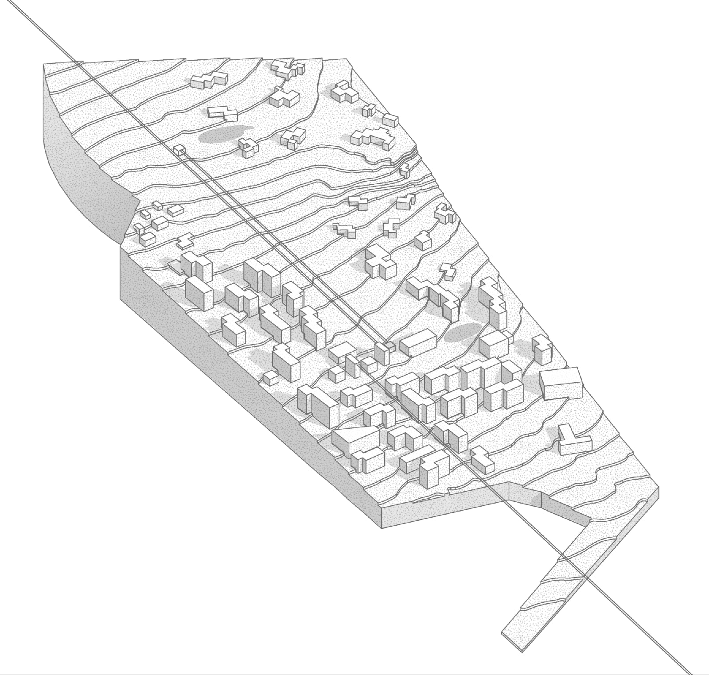

О Шерегеше
Горный курорт для активного отдыха
В Шерегеше работают 23 подъёмника и 34 трассы, а годовой турпоток уже достигает 1,7 млн человек. К 2030 году, с развитием транспортной доступности, ожидается рост до 3 млн гостей в год.
Шерегеш · Алтын-шор
«Алтын-шор» — масштабный проект в секторе F Шерегеша. Курорт рассчитан на зимний и летний отдых, гостиничную инфраструктуру, оздоровление, развлечения и удобную логистику для гостей.

О Шерегеше
В Шерегеше работают 23 подъёмника и 34 трассы, а годовой турпоток уже достигает 1,7 млн человек. К 2030 году, с развитием транспортной доступности, ожидается рост до 3 млн гостей в год.
Об Алтын-шор
Проект предусматривает гостиничный комплекс почти на 5 тысяч номеров и более 3 тысяч апартаментов. Первую очередь примерно на 600 номеров планируют запустить к сезону 2028–2029 годов.
О застройщике
Концепция объединяет размещение, горнолыжную инфраструктуру, оздоровительный кластер, культурные объекты, прогулочные зоны и летний отдых у воды.
Номера и цены
Гостиничная инфраструктура проекта рассчитана на разные сценарии: короткий горнолыжный отпуск, семейный отдых, длительное проживание и апартаментный формат.

Базовая категория для гостей, которым важны удобное размещение, быстрый доступ к инфраструктуре курорта и понятная стоимость.
тарифы уточняются
Просторный формат для семейного и продолжительного отдыха с повышенным уровнем комфорта и видом на природное окружение.
тарифы уточняютсяИнфраструктура и услуги
В проекте заложена инфраструктура, которая позволяет гостю проводить на территории весь день: от спорта и восстановления до ресторанов и прогулочных маршрутов.
Гастрохолл, рестораны и точки питания для разных форматов отдыха.
Спа- и фитнес-центры как часть оздоровительного направления.
Водные зоны и летний отдых у подножия горы Мустаг.
Планируемый водный объект для купания и отдыха в тёплый сезон.
Фитнес, спортивные центры и активности вне горнолыжных трасс.
Развлечения и досуг
Курорт проектируется как всесезонная территория: зимой акцент на трассах и подъёмниках, летом — на прогулках, воде, событиях и семейных активностях.
Детский клуб и программы для семейного отдыха.
Этно-музей шорской культуры и ремесленные мастерские.
Ярмарочная площадь, открытый кинотеатр и прогулочный бульвар.
Питание
Гастрономическая часть проекта включает рестораны, гастрохолл, сезонные точки и пространство для локальных событий.
Форматы питания будут рассчитаны на гостей отелей, апартаментов, посетителей мероприятий и тех, кто приезжает на курорт на день.
Галерея
В галерее собраны визуальные материалы территории, гостиничных объектов и природного окружения будущего курорта.
Как добраться
«Алтын-шор» расположен в секторе F Шерегеша. Для удобной логистики рядом с микрорайоном Шория-Град планируется «Площадь трёх вокзалов» и подбрасывающий подъёмник к сектору F.
На автомобиле: подъезд к сектору F со стороны Шерегеша.
Аэропорт: планируется в семи километрах от Шерегеша.
Вокзал: пересадка через будущую «Площадь трёх вокзалов».

Алтын-шор МаршрутОтзывы
Блок отзывов будет наполняться после запуска объектов размещения и первых гостевых сценариев.
Хочется увидеть, как проект соединит горнолыжный отдых, прогулки и культурную программу в одном месте.
Будущий гость
Для семейного отдыха особенно важны детский клуб, удобная логистика и активности не только зимой.
Семейный путешественник
Интересен формат всесезонного курорта с медицинским и реабилитационным комплексом.
Гость Шерегеша
Контакты / Бронирование
Первая очередь проекта планируется к сезону 2028–2029 годов. Оставьте заявку, чтобы получить информацию о запуске и условиях размещения, когда они будут опубликованы.
+7 000 000-00-00 info@example.com Юридическая информация будет опубликована к запуску проекта.Новости и акции
Раздел будет использоваться для новостей проекта, информации о событиях, запуске очередей и специальных предложениях.
После запуска здесь появятся предложения для зимнего и летнего отдыха.
Планируются события на ярмарочной площади и прогулочном бульваре.